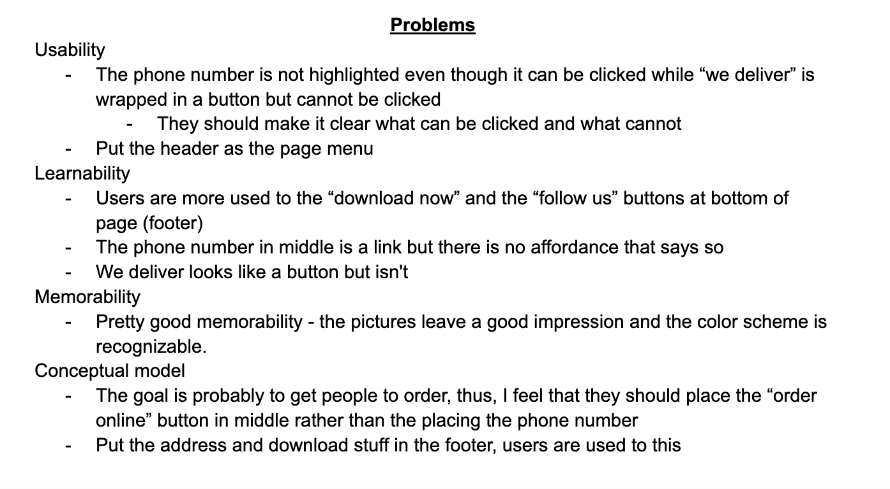
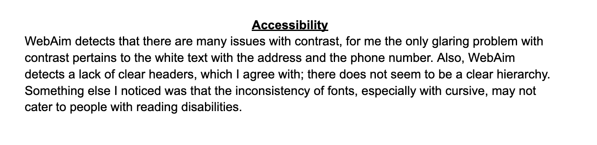

Responsive Redesign
I picked Chinatown on Thayer's website to redesign. I chose this website because while there are elements that are well-designed, there are also clear issues especially having to do with the layout/organization of the elements.
Screenshot of website
Click this link to visit their page!

